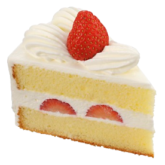

A short biography:
As you already know, my name is Miguel Baez. I am a sophmore student at English High School, the oldest public school in the United states. Most importantly, I am apart of the programming and web development CTE (career technical education) program
Interest and hobbies:
I have many hobbies, but the ones I partake in the most are badminton, puzzles & mind games, and eating. My favorite things to eat are oxtail, smoked ham, and sancocho. My favorite dessert is strawberry shortcake ^_^
